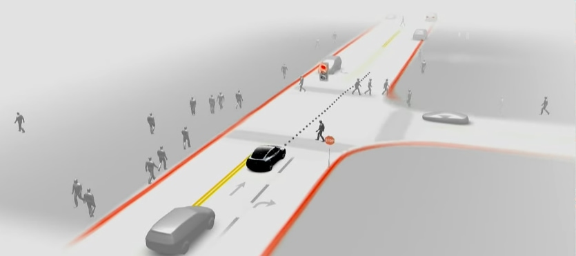
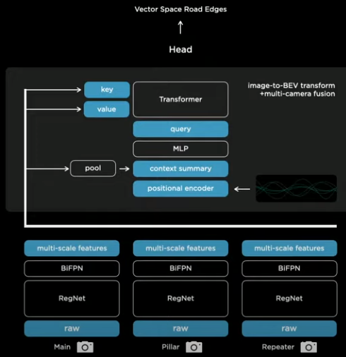
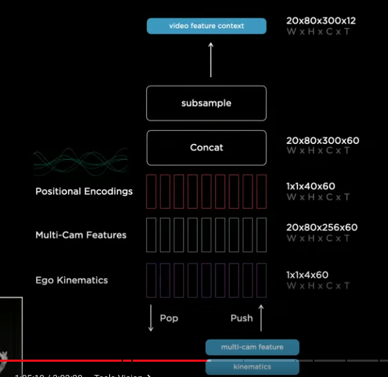
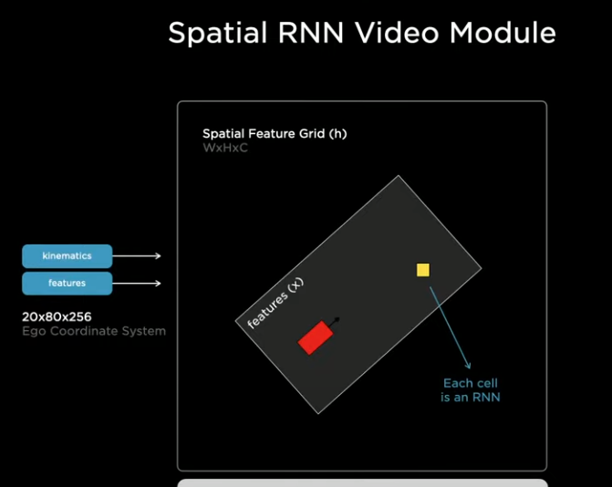
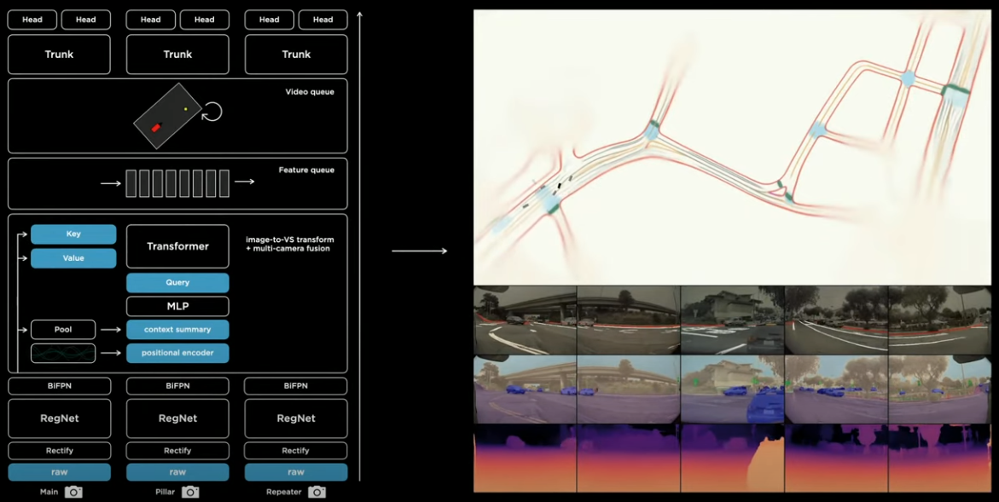
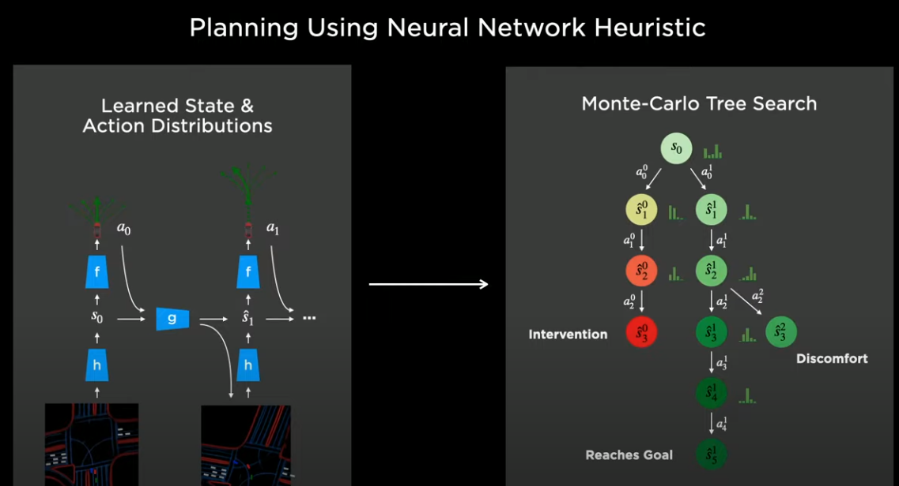
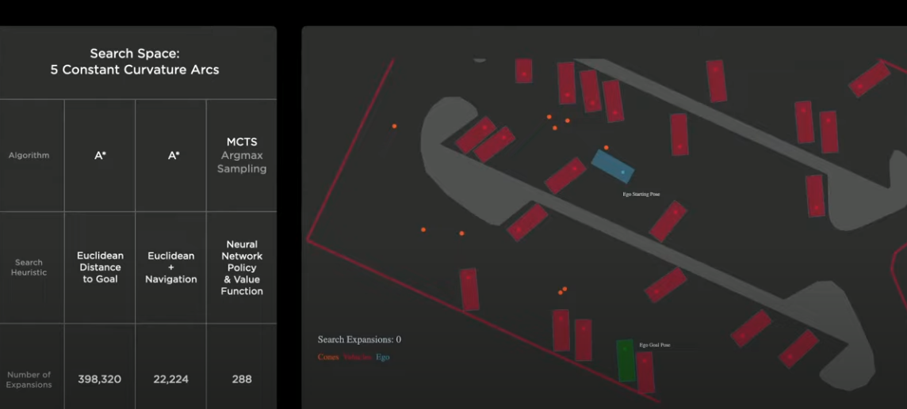
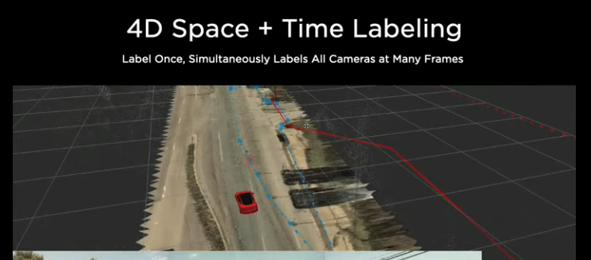
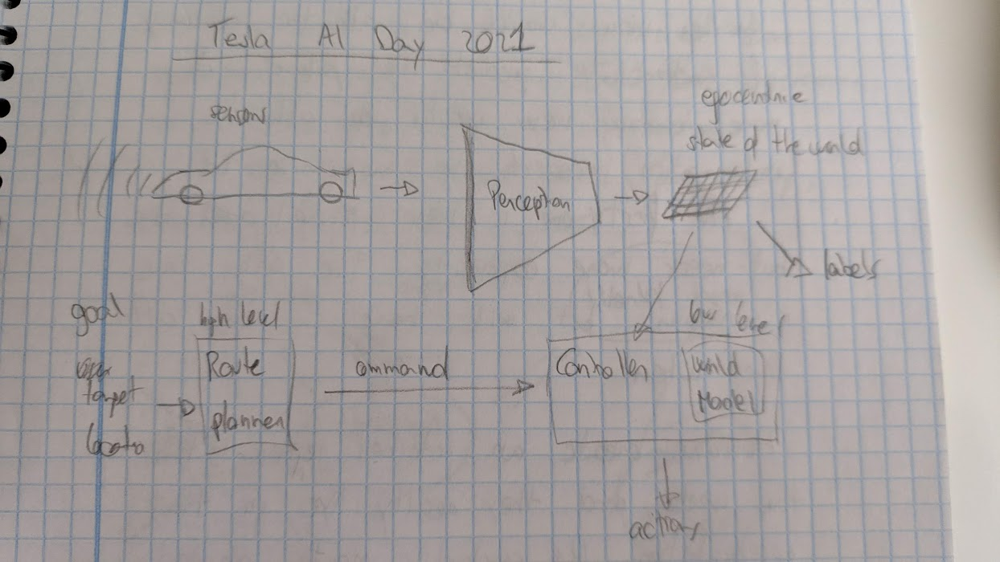
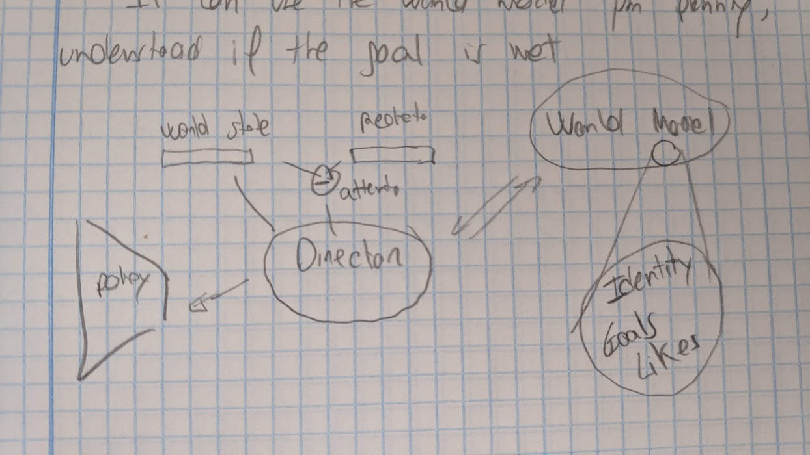

Tesla AI Day 2021
I have been watching the presentation of the Tesla AI Day and I would like to summarize how the system works.
Problem
The problem the Tesla car has to solve is to go from point A to point B. It needs to navigate through roads and cities to arrive to the goal location. It needs to deal with traffic, pedestrians and obstacles.
Route planning
The first step of the process is to do route planning. Apparently Google Maps uses Dijkstra's algorithm to find the shortest path on a graph.
So the car knows its location because it has a GPS and the user enters the goal location on the touchscreen. A search algorithm returns a route that may be decomposed into a series of steps. My intuition is that this steps are fed as high level actions to the AI system that translates those high level actions into fine-grained actions such as steer the wheels, brake...
For example the high level actions could be: turn left, follow the road for 20 km... The typical instructions we hear when using the GPS.
Perception
The task of the perception system is to integrate over time the information of all the cameras and sensors and to create an internal representation of the state of the world. This representation will be used later for planning. The representation is also rendered in the touchscreen probably to give confidence to the user.

Integrating all the cameras
Each camera is processed with a visual backbone and a Transformer learns to combine the information of the cameras into a single vector representation. Thus the output of this module is a single embedding that has all the information provided by all the cameras. From the presentation it seems that this representation has the same shape as the final egocentric representation of the world that will be described on the section below.

I find very interesting the use of a Transformer to merge information from different sources. It feels a very good choice and probably could be applied to many different problems.
Integrating information over time
To be able to represent the environment the car needs to integrate information over time. Objects can be occluded, signs could be left behind... and the car needs to remember that information.

This is solved with a queue that stores the vector space embeddings. That queue is updated using both time and space criteria.

Finally there is a there is a grid of RNN that creates and egocentric representation of the world. This RNN module integrates the time information into a single and final representation of the world.
Whole architecture

It is curious that the representation of the world can be directly visualized. The picture above shows the activation of some of the channels of the world representation.
Planning
They apply planning in the vector space to optimize for safety, comfort and efficiency.

According to the presentation the most efficient search method is to use Muzero's Monte Carlo Tree Search to plan.

Training data
The models are trained to predict the vector space given the images of the individual cameras.
Real data
The labels are applied in the vector space and reprojected to the individual cameras. Maybe they use this as auxiliary output or for visualization purposes, more probably the first option.

They have 1000 in house labellers and they have developed all the labelling software. Also auto-labelling is done offline to improve the speed of the labellers.
Simulation
In addition to real data they also have a simulation that provides data with perfect labels and also allows to reproduce clips from the real world with variations.
Summary
- Route planning
- Perception to create a world representation
- Plan the car trajectory using the world representation
Overall it seems a pretty strong setup and Tesla seems to be very well positioned to achieve autonomous driving. The model architecture is sound, the data collection pipeline is effective...
Can I think of any obstacle that given the current information may block the progress of Tesla to autonomous driving?
- Some people talk about long tail distributions. Rare events that are difficult to collect. This would be a problem to all automakers. And Tesla has the biggest fleet so far so it's in the best position.
- A more powerful computer may be needed to deploy autonomous driving. This should not be a problem for Tesla, it that is the case it could sell it to its costumers as an upgrade.
At this moment I cannot imagine an obstacle, so apparently is just a matter of time that Tesla gets to autonomous driving. They seem to have all the needed ingredients.
Thoughts

It's an hybrid system because it combines different kinds of algorithms.
In this context the state of the world is the location, speed, acceleration and state of all the elements of the road.
The finality of the sensors/senses is to find the state of the world. That is true for every system and living being. So it is nice that in the Tesla car we find that goal very explicitly.
What is a good representation of the world? In this case it is forced to be the elements that are
used later for planning.
Another view would be all the necessary information to predict the future (world model). A more narrow view would be
all the information needed to maximize the reward (value function or policy). The first one is more
general but needs more capacity. The other one is simpler but will be more difficult to adapt to
changes in the environment.
Humans create an internal representation of the world and they live in that representation. We constantly create predictions about the future and update our beliefs if they fail. Those predictions can have different timescales.

The world model can be queried to:
- Recall elements from the past
- Imagine or predict future situations
It feels like a module is missing on the previous drawing. Some sequential module that we could call consciousness and whose task is to direct the flow of information. It can use the world model for planning, understand if the goal is met, use the system 1 when possible... A module like that could be trained with reinforcement learning.

I should think more deeply about the world model and the director modules on coming weeks.